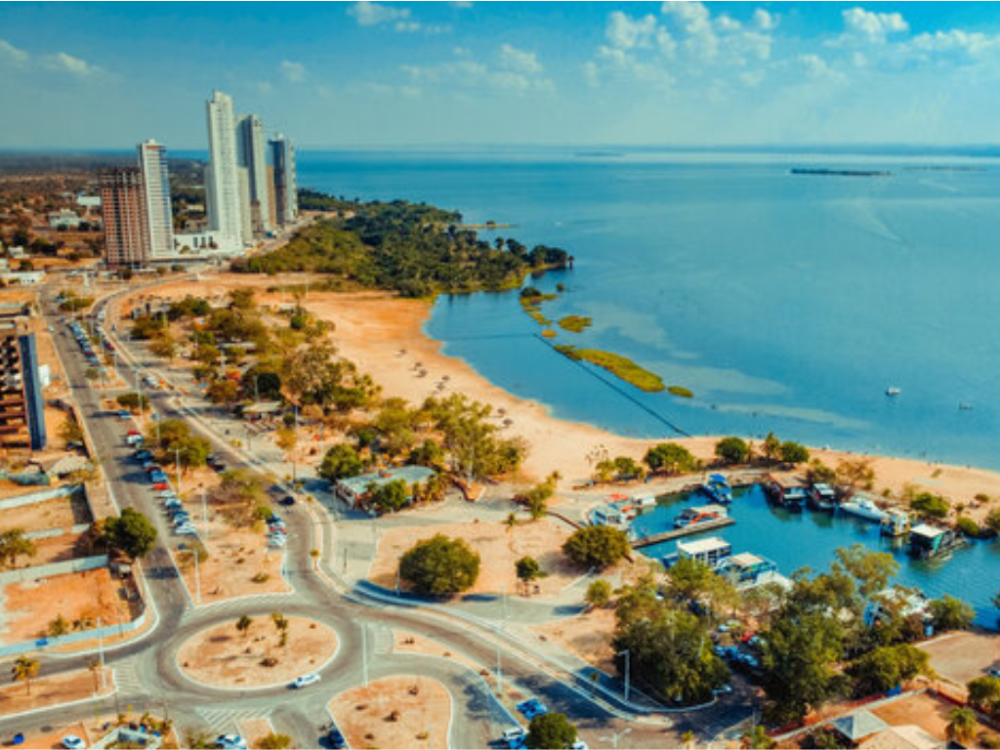

Tocantins é o estado mais jovem do Brasil, criado em 1988 a partir da divisão do estado de Goiás, e está localizado na região Norte do país. Sua capital, Palmas, foi planejada e construída para sediar o governo estadual, destacando-se por sua organização urbana e crescimento acelerado. Tocantins possui uma economia baseada na agropecuária, especialmente na produção de soja, milho e criação de gado, além de atividades ligadas ao comércio e aos serviços. O estado também se destaca por suas belezas naturais, como o Jalapão, famoso por suas dunas, cachoeiras e fervedouros, atraindo turistas de várias partes do Brasil. Com áreas de cerrado e transição para a Amazônia, Tocantins reúne grande biodiversidade e importância ambiental.
